MOMENTOS QUE MARCARON NUESTRA HISTORIA
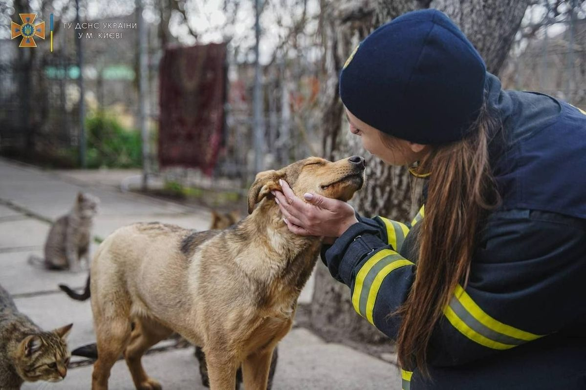
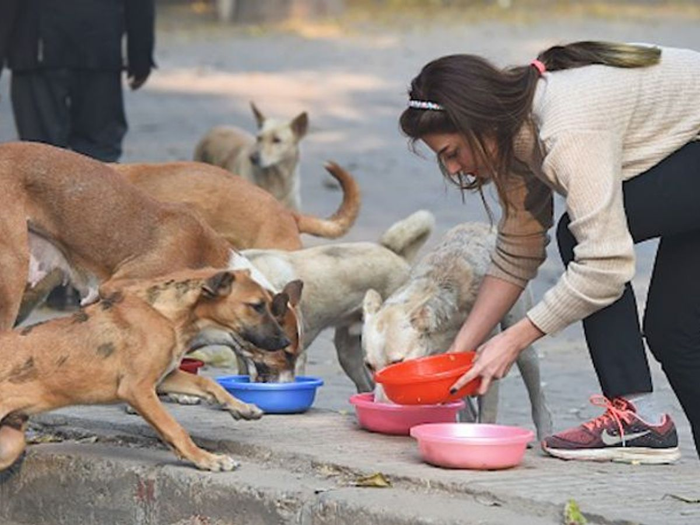
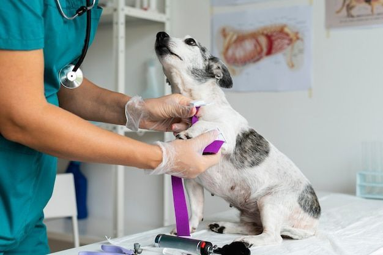
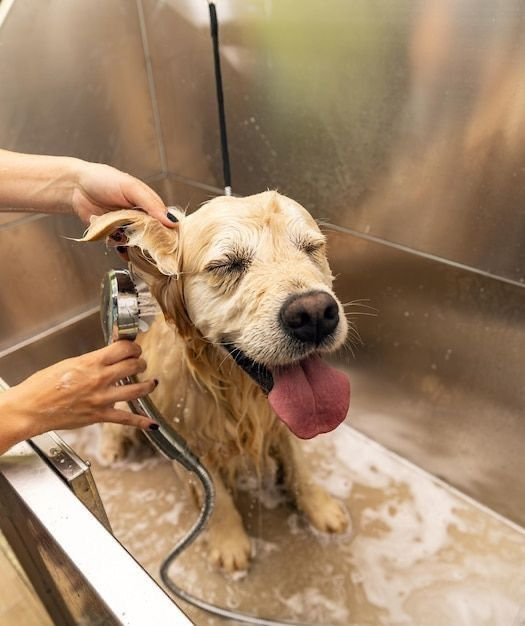

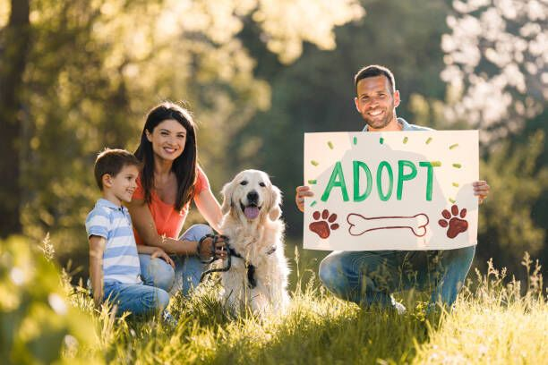
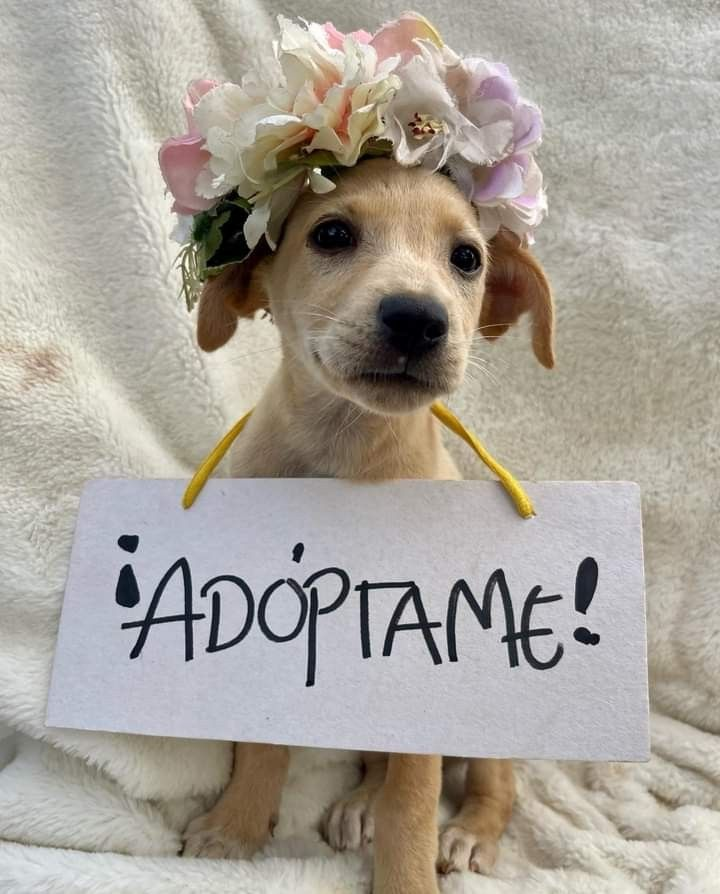
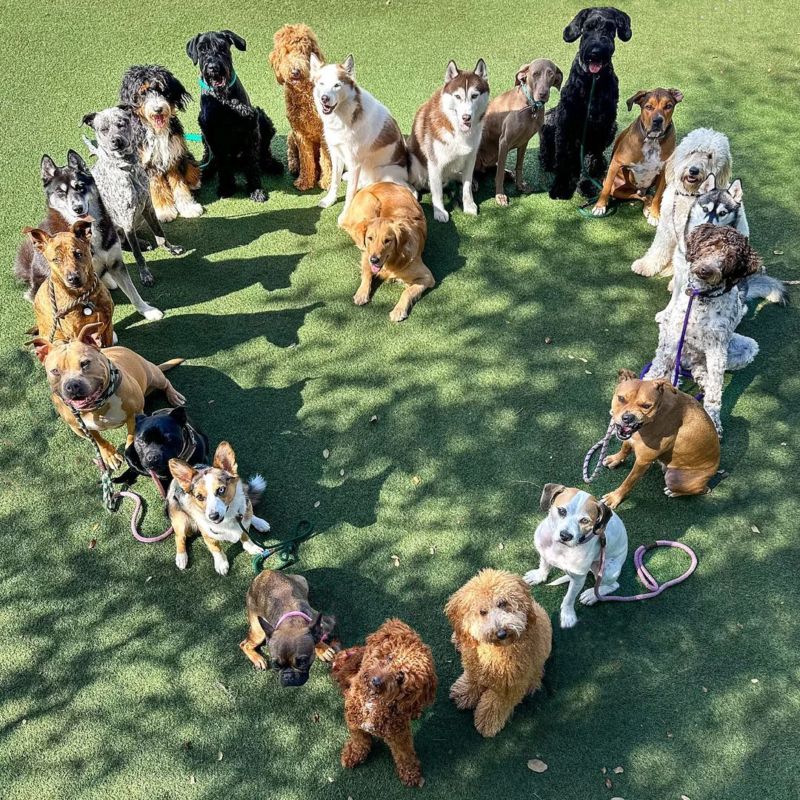
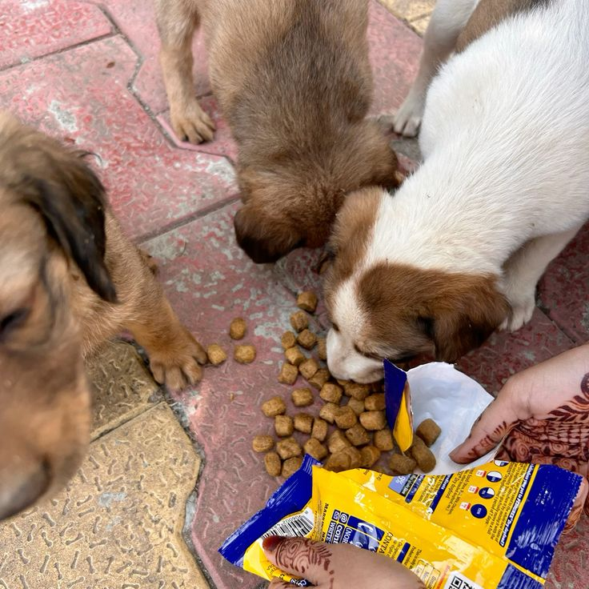

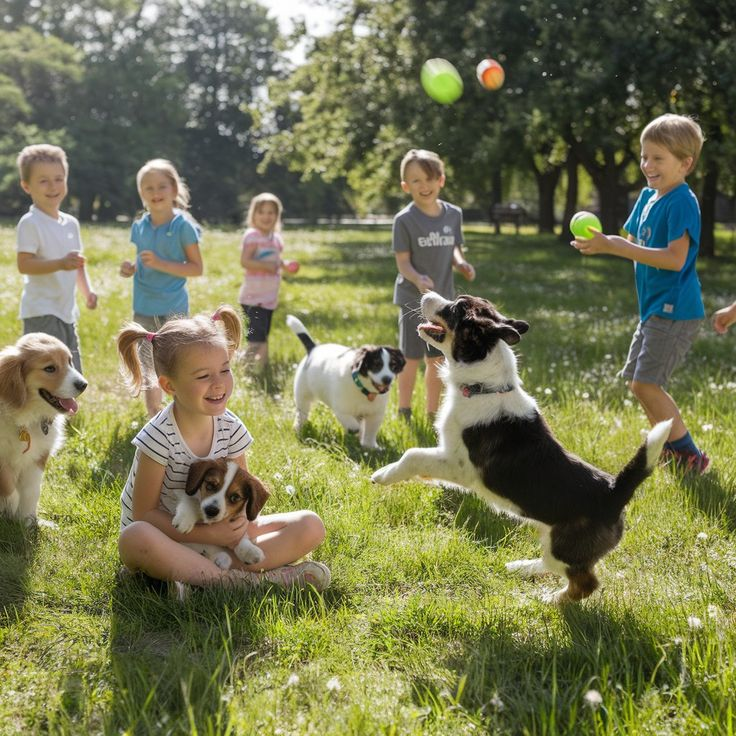
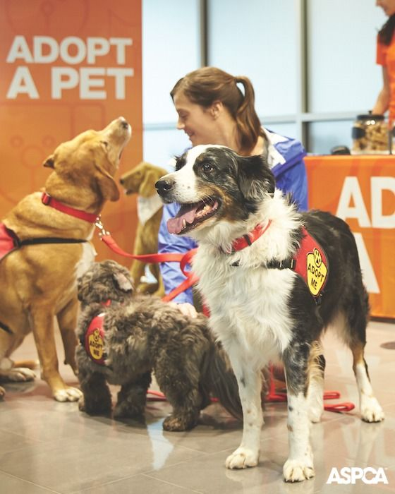
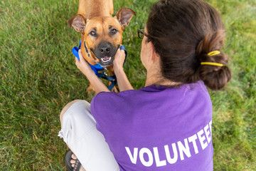
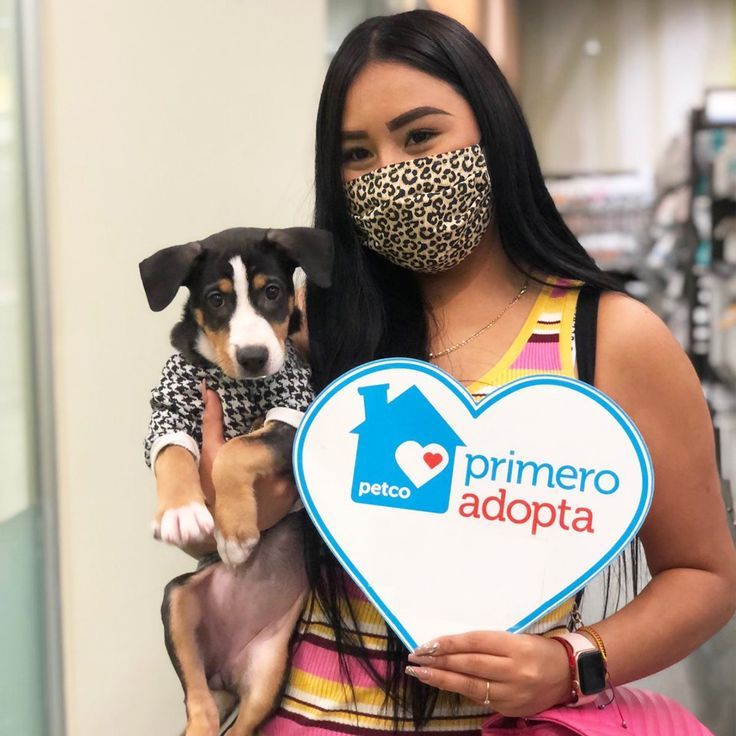












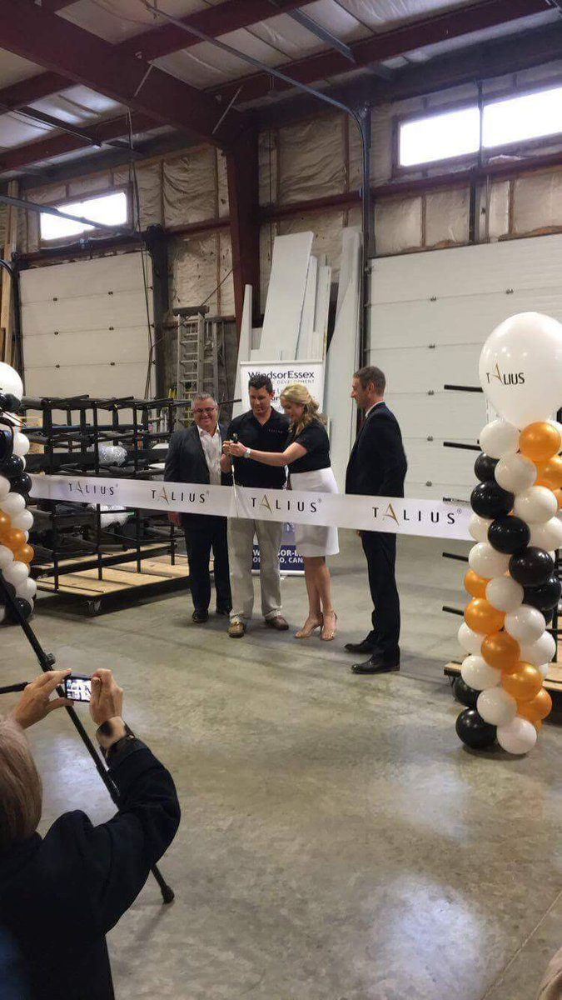
Abrimos las puertas de nuestro espacio de acogida temporal, brindando un lugar seguro para los animales mientras encuentran una familia.

En 2024 logramos rescatar a 15 perros que vivían en condiciones de abandono. Todos recibieron atención veterinaria y encontraron un hogar seguro.
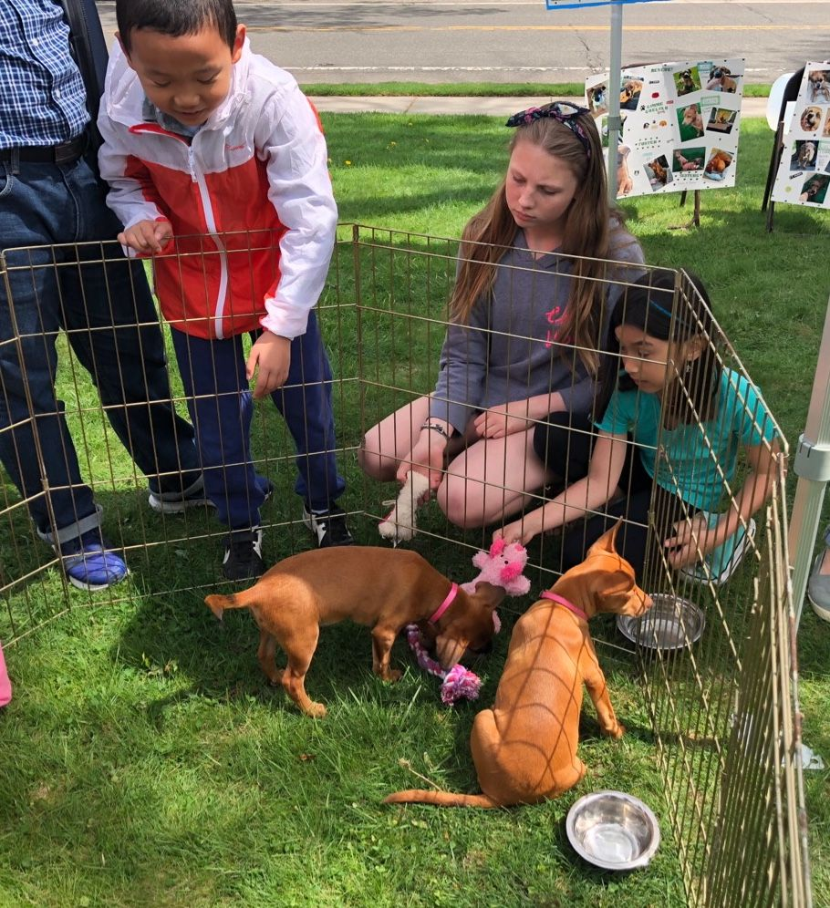
Nuestra primera jornada de adopción reunió a decenas de familias y permitió que varios animales encontraran un nuevo hogar.
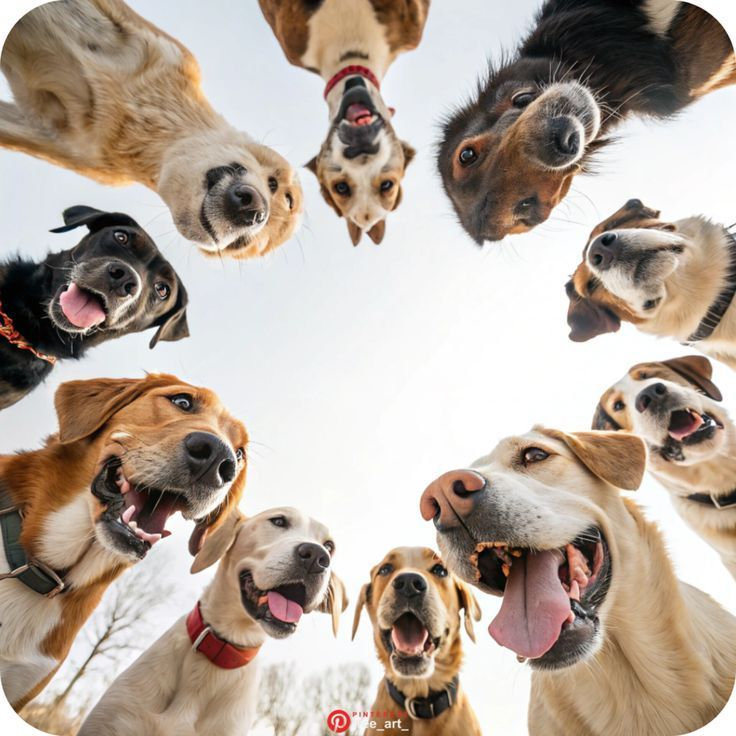
Alcanzamos más de 100 adopciones responsables gracias al apoyo de voluntarios, donantes y familias comprometidas.
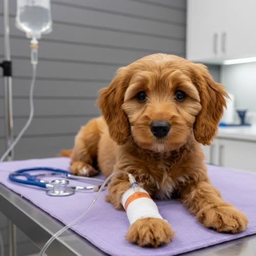
Toby llegó con una grave lesión en una de sus patas. Tras varios meses de tratamiento, pudo volver a caminar y hoy disfruta de una vida saludable.
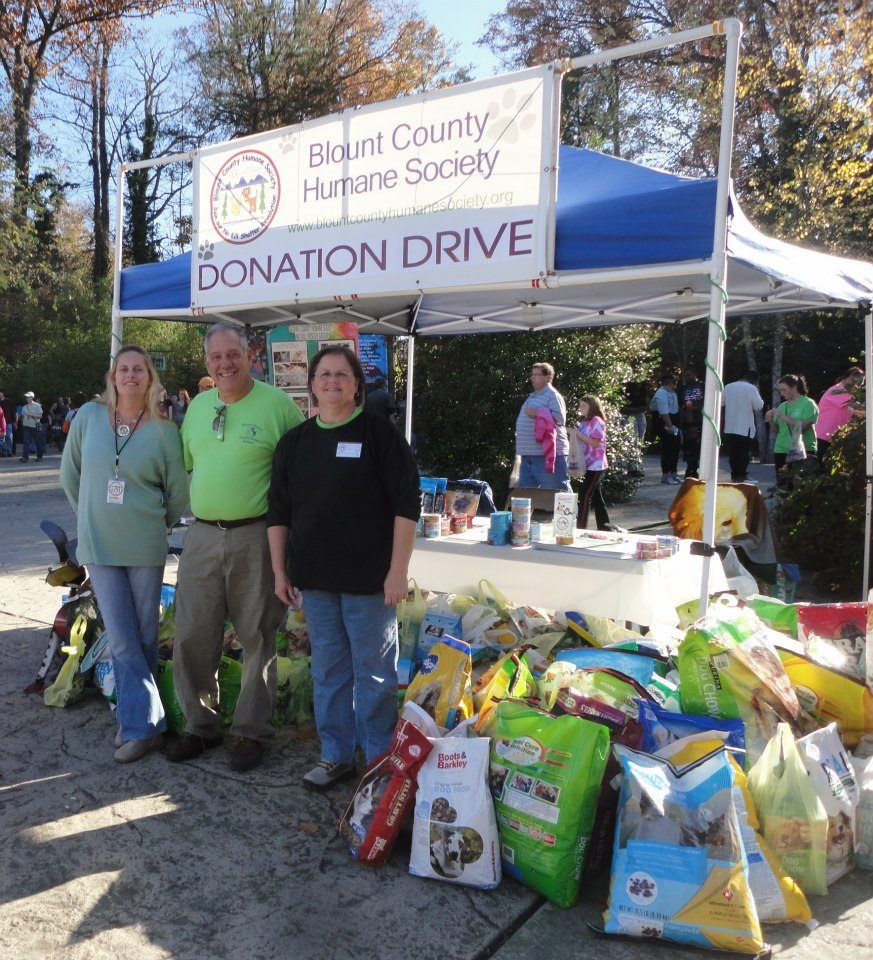
Con la ayuda de la comunidad logramos reunir alimentos, medicamentos y suministros para decenas de animales rescatados.